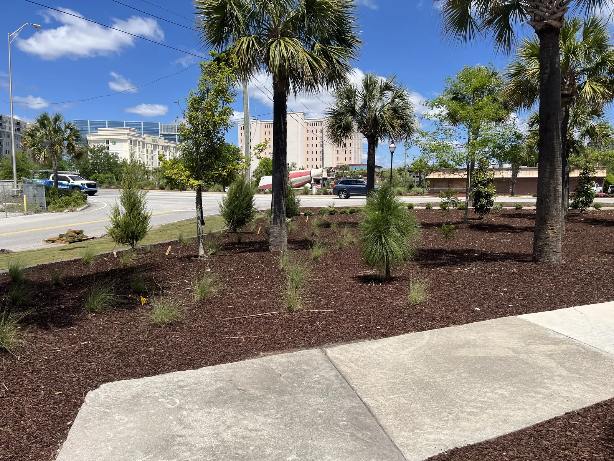

Plants & Trees for Charleston, SC Landscapes

The Lowcountry Lets You Plant Things Most Places Cannot
Charleston sits where the temperate south and the subtropics overlap. That is why a yard here can hold a Japanese maple, a windmill palm and a live oak without any of it looking like a mistake — and why a few popular choices get burned by a single hard frost.
What we plant on a given property comes down to the yard and the style. Some landscapes are formal and sheared. Some are tropical. Some are really gardens. The planting should match the architecture of the house, which is where we start before anyone talks about a plant list.
Hedges and Screening
Most projects start here, because most people want privacy before they want anything else.
- Podocarpus, ligustrum and sweet viburnum are our workhorse hedges.
- Boxwood where the look is formal and the hedge is smaller.
- Podocarpus, ligustrum and sweet viburnum make excellent screening as well as hedging. Left to grow rather than clipped tight, they give you height and a solid evergreen wall.
- Bamboo for the fastest and densest screen of all. Certain types are not too maintenance heavy, and the type matters a great deal — this is not a plant to buy on your own and find out later.
A hedge is also where over planting does the most damage. Spaced to look finished on day one, it is a thicket in three years. We space for the size the plant is actually going to be.

Shade, Color and the Winter Garden
- Japanese maple — the garden plant for a shady spot, and the one people photograph.
- Camellia — medium sun, shade loving, and a big impact in winter color when the rest of the yard has nothing going on.
- Perennials for color through the season.
- Loquat — a tropical evergreen tree that fruits.
- Bottlebrush — tropical, takes shade, and prone to frost damage. Worth planting with that understood rather than discovering it in January.
Palms: More Choice Than Most People Realize
There are many more palms available here than most homeowners realize: lady palm, windmill palm, fan palm, saw palmetto and coontie among them. They differ in sun and shade tolerance, in frost tolerance, in eventual size and in texture, so the right palm for a shaded courtyard is not the one for an exposed front yard.

Ground Cover That Fills In Instead of Filling Up
Agapanthus, sweetgrass and mondo are our regulars, along with the many ferns that thrive in Lowcountry shade.
Ground cover is the layer that makes a bed read as finished, and it is the cheapest way to avoid the mistake of planting too many shrubs to cover bare ground. Beds are finished with mulch and edging.
Trees for a Charleston Yard
The popular ones, and for good reason: live oak, bald cypress, holly, magnolia and crape myrtle.
Trees are the decision with the longest consequences in a yard. Size at maturity, where the shade will fall in ten years and what is underneath — drainage lines, a patio, the neighbor’s fence — all matter more than what the tree looks like on the truck. This is the part of a plan worth slowing down for.
How Planting Works With Us
- Free consultation at your home, and an honest budget conversation.
- A design that suits the architecture, layered so plants grow together rather than fight each other. Drawings, with 3D renderings optional at additional cost.
- Prep before planting — grading, drainage and irrigation.
- Planting, trees and larger material first.
- Finishing with ground cover, mulch and bed edging.
Our 1-year plant warranty covers replacement of the plant and the labor. It does not apply without an automatic watering system, or to losses from acts of weather. Full detail on landscape design and installation.
Frequently Asked Questions
What plants grow best in Charleston, SC?
For hedging and screening we rely on podocarpus, ligustrum and sweet viburnum, with boxwood where the look is formal. For shade and winter color, Japanese maple and camellia. Palms of many kinds, from lady palm and windmill to saw palmetto and coontie. For trees, live oak, bald cypress, holly, magnolia and crape myrtle.
Which plants get caught out by frost here?
Bottlebrush is the one to know about before you plant it: it is tropical, takes shade and is prone to frost damage. Palms vary widely in frost tolerance too, which is part of choosing the right one.
What is the best plant for privacy screening?
Podocarpus, ligustrum and sweet viburnum all screen well as well as hedging, and they are evergreen here. Bamboo gives the fastest and densest screen of all, though the type matters a great deal.
What ground cover works in Lowcountry shade?
Agapanthus, sweetgrass and mondo are our regulars, plus the many ferns that do well in shade here.
How do you decide what to plant in my yard?
The landscaping should match the architecture of the house. Beyond that it comes down to the individual yard and the style you want, whether that is formal and sheared, tropical, or more of a garden. We avoid over planting and layer correctly so the landscape grows together instead of fighting itself.
Areas We Serve
Cramers Landscaping provides its services throughout:
- Charleston, SC
- Mount Pleasant, SC
- Isle of Palms, SC
- North Charleston, SC
- James Island, SC
- West Ashley, SC
- Kiawah Island, SC
- Summerville, SC
- Daniel Island, SC
- Johns Island, SC
Get in Touch
Ready to Transform Your Landscape?
If you’re searching for a landscaping company in Charleston that delivers expertise, reliability, and long-term value, Cramers Landscaping is here to help. We offer free consultations and custom project quotes tailored to your needs.
Location
9153 Markleys Grove Blvd, Summerville, SC
Phone
Hours
Monday – Friday: 8:00 AM – 5:00 PM
Saturday: 9:00 AM – 2:00 PM
Sunday: Closed